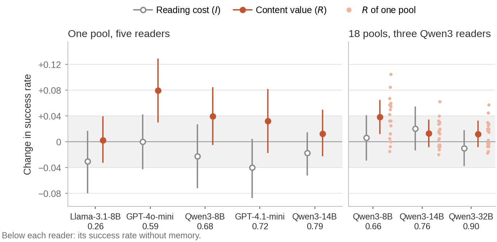

SkillRC: Is It the Skill or the Stack?
Auditing experience memory in agent harnesses
Manuscript, 2026
The question
A common way to let an LLM agent learn from experience is to distill its past runs into a short list of rules and put the list in its prompt. The same list can help one model and do nothing for another, or harm it. Is that because of what the rules say, the skill, or because of how each model reads added text, the stack?
Answer. The differences we could attribute are in the skill. No model pays a measurable cost for reading the memory, while what the rules say is worth +0.08 to GPT-4o-mini, about +0.04 to Qwen3-8B, nothing measurable to four other models, and a loss on WebShop.
To separate the two, we built a control that keeps everything about the memory except its content: the same items, tags, word counts and order, and the same token count under every model's tokenizer. Each rule is replaced by a sentence about gardening, with a few words replaced by a placeholder where needed to match token counts. The memory's effect then splits into a reading cost (control minus no memory) and a content value (memory minus control).

What we found
- No reader pays a measurable reading cost. Matched unrelated text changes ALFWorld success by at most 0.04 for each of six models, and no model's reading cost is distinguishable from zero. Where a memory does nothing for a model, its content value is near zero too, so no reading cost is masking a gain.
- Content is worth something to two readers and lowers the score on WebShop. For Qwen3-8B, averaged over 18 pools, the content value is +0.039 [0.012, 0.065]. GPT-4o-mini also gains reliably from a pool built from its own runs, while four other models gain nothing measurable. On WebShop the distilled rules lower the score: several rules tell the agent to search again, and GPT-4o-mini searches more than twice as often (5.7 against 2.4 times per session).
- For Qwen3 readers, distilled rules beat generic advice and the source agent made no difference. For Qwen3-8B and Qwen3-14B, rules distilled from trajectories beat equally long rules written from the task description alone by +0.035 [0.014, 0.057] (the two lists were written by different models; see the paper). Qwen3-32B did not read the generic rules. For all three Qwen3 readers, with the same number of trajectories per task type from each source, it made no difference which agent supplied them. Pools built by the same pipeline differ from one another about as much as the effects, so a memory is best judged over several pools.
How it was tested
Five studies on ALFWorld and WebShop with six readers (GPT-4o-mini, GPT-4.1-mini, Llama-3.1-8B, Qwen3-8B, Qwen3-14B, Qwen3-32B) and 24 ALFWorld pools. For each study the predictions and the analysis were written down before its runs; the paper lists every prediction with its outcome and marks the exploratory analyses. The one planned test of a difference between readers was not significant, the intervals of the differences between readers' reading costs reach 0.10, and the topic of the unrelated text shifts the reading cost by 0.025. The readers are small and mid-sized models and the memories are short rule lists, so the results do not speak to frontier models or long procedural skills.
Citation
@misc{lu2026skillrc,
title = {{SkillRC}: Is It the Skill or the Stack? Auditing Experience Memory in Agent Harnesses},
author = {Lu, Yiwen},
year = {2026},
note = {Manuscript},
url = {https://github.com/EvenEureka/SkillRC}
}